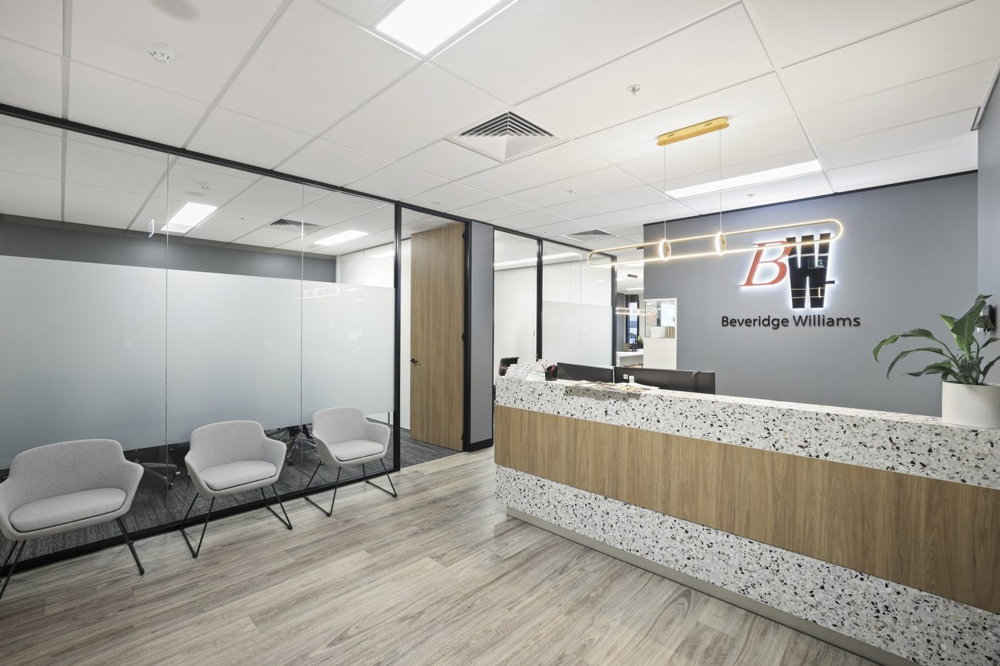

New
Meet Caddie
He has read every page of this site, which is a sentence he would rather you did not dwell on. Ask him what a command does, what it prompts for, or why your ribbon has gone missing again — in your own words, and with follow-ups.
He answers from this documentation and nothing else. He knows the course; he cannot see your drawing.
01 Where everything lives
Browse by section
Start here Install the suite One installer, every discipline. Pick a workstation preset or tick the components you want — each one works on its own.
02 Context
What this is
CAD tools have a habit of scattering — a routine on someone's desktop, a template on a network drive, a workflow that only works if you know who to ask. This is where that gets collected: one installed suite any Beveridge Williams office can use, plus the standards and know-how it grew out of. The tools travel as they are; the drafting standards are Western Sydney's practice, written down so there is something concrete to compare notes against.
Every command in the BW BricsCAD Tools suite is documented here — what it does, what it prompts for, what it draws and on which layer, and the things worth knowing before you run it. The command pages are written directly against the shipping tools, so they describe how they actually behave.
If you reached this site from a Help button on one of the ribbons, use the section navigation to find the tool you were using.
03 Get moving
What are you doing today?
The three things people most often arrive here for. Each one is the short path through, in order.
Drafting a plan
Marking up a WAE
04 Where it comes from
Who builds this
The suite is built and maintained by the Western Sydney Drafting team — drafters who write the tools they use, then keep them working. It grew out of the day job: NSW cadastre, deposited plans, Works-As-Executed. That's why the commands assume real drawings rather than tidy examples, and why the documentation says what a tool actually does instead of what it was meant to.
It isn't ours alone. Every office and department is welcome to install it, use what's useful, and say what isn't — and if you write your own routines, they can ship with the suite and reach every machine automatically.
Standardising properly across the business is the direction, not the current state. What's written here is Western Sydney's practice, published so there's something concrete to work from: where your office does it differently and the difference matters, we'd rather hear it than quietly diverge. The requests page is how that starts.